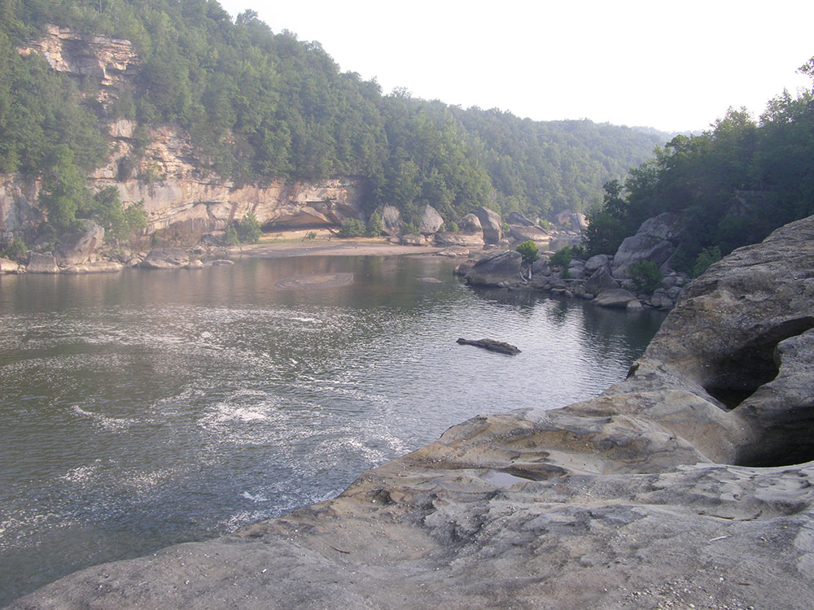
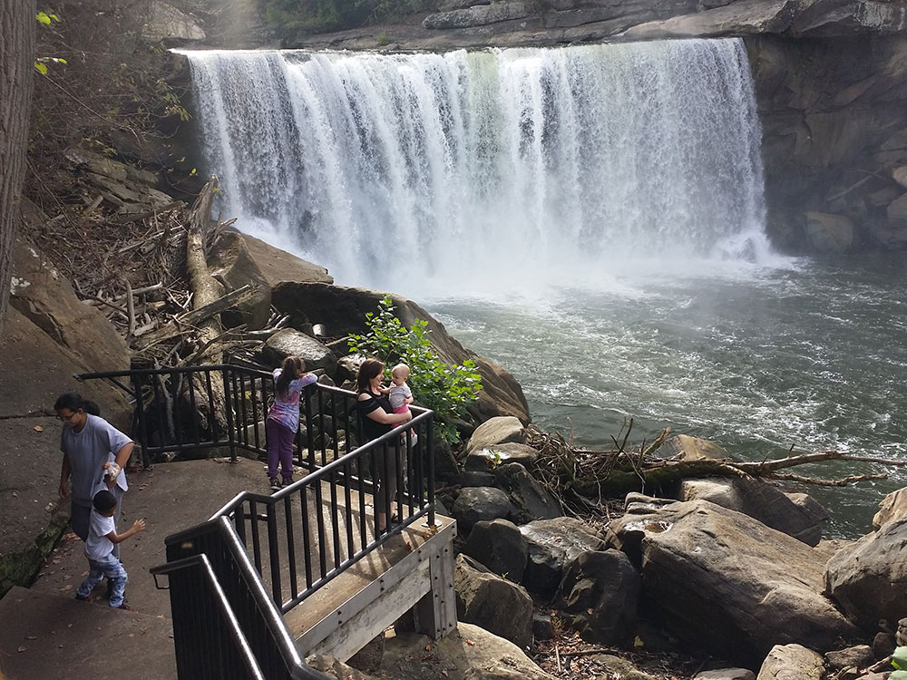
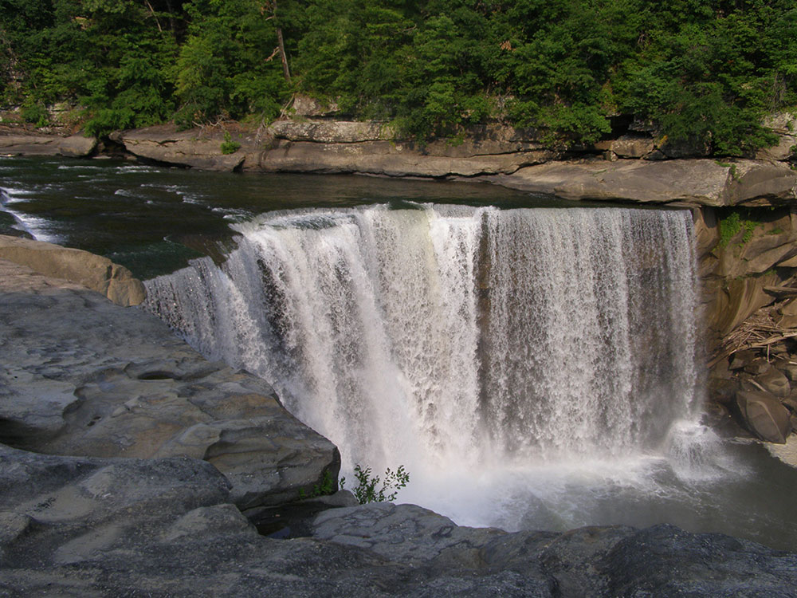
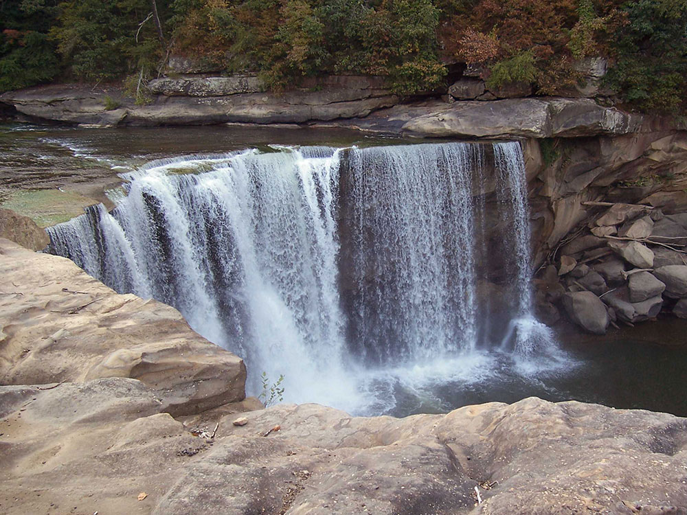
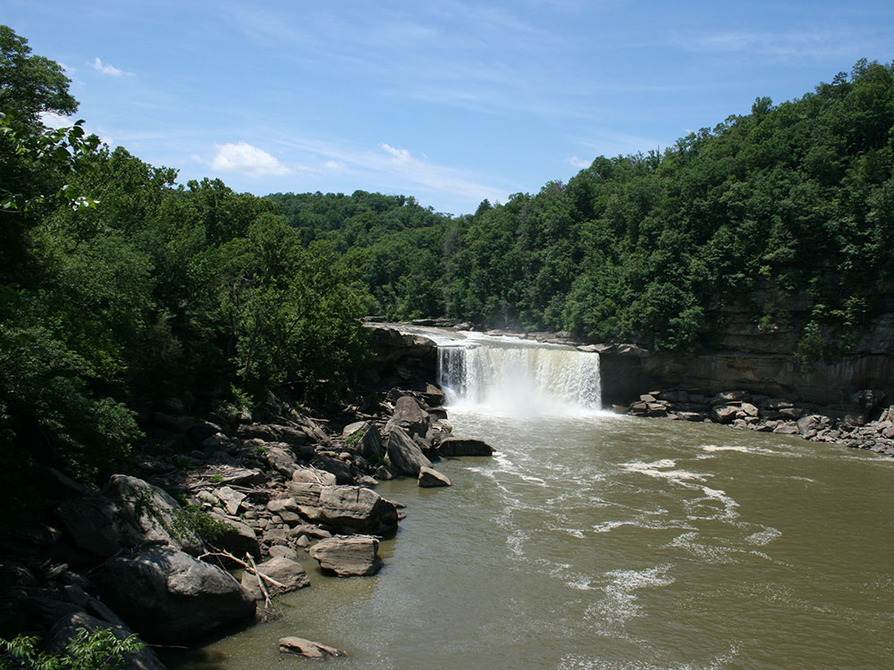

Waterfall on the Cumberland River in southeastern Kentucky is the central feature of Cumberland Falls State Resort Park
General Information
Pool hours: 10am–8pm (Memorial Day–July), 10am–6pm (August–Labor Day)
Horseback riding: $18 per person
Gem mining: $6–$10 per bag
Pool access for non-lodging guests: $5
$30 per stay in lodge rooms, $50 per stay in cottages
No cats allowed
Open year-round
How to Get There
From Knoxville, TN (95 mi): Take I-75 N to KY-92 W in Whitley County. Follow KY-92 W and KY-90 W to Cumberland Falls State Resort Park in Corbin.
Overview
Cumberland Falls State Resort Park is a 1,657-acre Kentucky state resort park in the Daniel Boone National Forest, built around Cumberland Falls, a 68-foot-tall, 125-foot-wide waterfall on the Cumberland River. Often called the "Niagara of the South," the falls is one of the largest waterfalls east of the Rocky Mountains by volume. It is best known as one of the few places in the Western Hemisphere where a moonbow, a rainbow formed by moonlight, regularly appears on clear nights near a full moon. The falls and surrounding land were donated to Kentucky in 1933, and the section of the river is a designated Kentucky Wild River, with the forest protected as a state nature preserve. Visitors come to see the falls and moonbow, hike to Eagle Falls, ride the river, and stay at the park's lodge, cottages and campground.
Access
The park is in southeastern Kentucky, on the border of McCreary and Whitley counties, about 20 miles southwest of Corbin and 25 miles from Williamsburg. Nearly all visitors arrive by car, following KY-90 west from the Corbin and Williamsburg area. It is roughly 95 miles from Knoxville, Tennessee, and about 100 miles from Lexington. The falls overlook is a short walk from the parking areas, and some viewing areas are accessible, but the trail to Eagle Falls is steep and rocky.
Seasons
Spring brings high water, wildflowers and the most powerful flow over the falls, while summer is the busiest season, with swimming, rafting and other activities, though hot and humid. Fall is especially popular for leaf color around the gorge, and winter can produce ice formations around the falls and quieter trails, along with some icy roads and closed facilities. The moonbow is visible for a few nights around each full moon on clear evenings, and it depends on water level and weather, so check the park's published moonbow schedule. The park is open year-round, and the pool and some outdoor activities operate only in the warm season.
During or near a full moon on clear nights, a lunar rainbow or moonbow is sometimes formed by the water of the falls. The formation of a moonbow at Cumberland Falls is aided by a combination of steep gorge walls, which reduce dissipation of the waterfall's mist by wind, and a wide gorge which allows increased levels of moonlight.
It is the only location in the Western Hemisphere where moonbows are known to appear with regularity, and the Kentucky Department of Parks publishes schedules for visitors.
The ability of visitors to see a moonbow may vary with water level. At low levels, the falls may not produce sufficient mist for the phenomenon. Conversely, if conditions include substantial downstream wind, this may increase the level of mist and make a moonbow more likely to be visible.
On average the falls, which flows over a resistant sandstone bed, is 68 feet (21 m) high and 125 feet (38 m) wide. Cumberland Falls is the second largest waterfall east of the Rocky Mountains, and the largest waterfall as measured by water volume in the Eastern United States, south of Niagara Falls. The falls divides the river into two sections, the Upper and Lower, or "below the falls" section.
Cumberland Falls State Resort Park is a park located just southwest of Corbin, Kentucky and is contained entirely within the Daniel Boone National Forest. The park encompasses 1,657 acres (671 ha) and is named for its major feature, 68-foot-tall (21 m) Cumberland Falls. The falls are one of the few places in the western hemisphere where a moonbow can frequently be seen on nights with a full moon. The park is also the home of 44-foot (13 m) Eagle Falls. The section of the Cumberland River that includes the falls was designated a Kentucky Wild River by the Kentucky General Assembly through the Office of Kentucky Nature Preserves' Wild Rivers System. The forest in the park is also a dedicated State Nature Preserve.
Things to Do
See Cumberland Falls
Cumberland Falls State Resort Park is home to the famous Cumberland Falls, a 125-foot-wide waterfall often called the "Niagara of the South." The falls are one of Kentucky's most iconic natural attractions and are renowned for producing a rare moonbow, a rainbow created by moonlight that can be seen during certain lunar conditions.
Experience Scenic Overlooks and Outdoor Recreation
The park features numerous overlooks that provide spectacular views of Cumberland Falls, the Cumberland River, and the surrounding Daniel Boone National Forest. Visitors can enjoy hiking, fishing, rafting, horseback riding, wildlife viewing, and nature photography throughout the park.
Stay at the Historic Resort Lodge
DuPont Lodge serves as the centerpiece of the park, offering lodging, dining, and easy access to the falls and surrounding natural attractions. Visitors can relax while enjoying mountain views and exploring one of Kentucky's most popular state park destinations.
Top Trails
Eagle Falls Trail
Length: Approximately 1.5 miles round trip
Elevation Gain: Approximately 250 feet
Difficulty: Moderate
One of the park's most popular hikes, this trail descends into a scenic gorge and leads to Eagle Falls, a beautiful waterfall located across the river from Cumberland Falls. Along the route, hikers enjoy stunning views of the Cumberland River and surrounding cliffs.
Moonbow Trail
Length: Approximately 1.0 mile loop
Elevation Gain: Minimal
Difficulty: Easy
This scenic trail provides access to viewpoints overlooking Cumberland Falls and the river corridor. It is a popular route for visitors hoping to experience the park's famous moonbow phenomenon and photograph the falls from different perspectives.
Sources: Kentucky State Parks official Cumberland Falls State Resort Park information, including Cumberland Falls, moonbow viewing, DuPont Lodge, hiking opportunities, recreational activities, and visitor amenities. https://parks.ky.gov/corbin/parks/resort/cumberland-falls-state-resort-park Additional trail, waterfall, and visitor information verified through Kentucky State Parks resources and park guides. https://parks.ky.gov/parks/resort/cumberland-falls/
- Visitor's center
- Interpretive center
- Tennis Court
- Playgrounds
- Firepits
- Picnic tables in each cabin group
- Mountain biking
- Hiking - approximately 20 miles of trails
- Fishing in Cumberland River
- Horseback rides
- Pool
- Different activities by the week for guests of the park such as square dancing, archery, arts and crafts, group hikes, and animal encounters
- White water rafting and canoeing on Cumberland River
Eagle Falls is located in Cumberland Falls State Resort Park in McCreary County, Kentucky. Water from Eagle Creek descends 44 feet (13 m) before landing on the rocks below on the Cumberland River shoreline. Eagle Falls can be accessed by hiking Trail 9 located on Kentucky Route 90 in the Cumberland Falls State Park. The trail to Eagle Falls is 2.5 miles one direction(2.4 km) and includes some of the best views of Cumberland Falls.
Visitor Centers
The park has a visitor center and an interpretive center near the falls with exhibits on the geology, wildlife and history of the gorge, as well as information on the moonbow, trails and programs. Park staff can provide trail maps and schedules for guided activities during the main season. DuPont Lodge, the park's main lodging and dining facility, also has a gift shop and front desk that can help with information. Hours vary by season, so confirm them before you go.
Camping and Lodging
The park offers lodging at DuPont Lodge and in cottages, and it also has a campground, so many visitors stay inside the park and can see the falls at night during moonbow evenings. Hotels, motels and restaurants are in Corbin, about 20 miles away, and Williamsburg, about 25 miles away, with additional options near I-75. The Corbin area is also home to the original Harland Sanders Cafe museum, which makes a popular stop. Lodging and campsites in the park fill quickly on summer weekends and during moonbow nights, so reserve early.
This article uses material from the Wikipedia article "Cumberland Falls", "Cumberland Falls State Resort Park", and "Eagle Falls (Kentucky)", which is released under the Creative Commons Attribution-Share-Alike License 3.0








